ID: frog-train-n01639765_13762/felzenszwalb_gaussian_softmax
Accuracy: 0.687 -> 0.687
Mean Recall: 0.687 -> 0.687
Mean Precision: 0.692 -> 0.692
Mean F1: 0.684 -> 0.684
Target Recall: 0.808 -> 0.863
Target Precision: 0.744 -> 0.645
Target F1: 0.775 -> 0.738
Orig Pred Recall: 0.877 -> 0.828
Orig Pred Precision: 0.68 -> 0.785
Orig Pred F1: 0.766 -> 0.806
ID: frog-train-n01646292_3241/felzenszwalb_gaussian_softmax
Accuracy: 0.687 -> 0.687
Mean Recall: 0.687 -> 0.687
Mean Precision: 0.692 -> 0.69
Mean F1: 0.684 -> 0.682
Target Recall: 0.808 -> 0.849
Target Precision: 0.744 -> 0.681
Target F1: 0.775 -> 0.756
Orig Pred Recall: 0.743 -> 0.694
Orig Pred Precision: 0.594 -> 0.647
Orig Pred F1: 0.66 -> 0.67
ID: frog-train-n01641577_8322/felzenszwalb_gaussian_softmax
Accuracy: 0.687 -> 0.687
Mean Recall: 0.687 -> 0.687
Mean Precision: 0.692 -> 0.694
Mean F1: 0.684 -> 0.683
Target Recall: 0.808 -> 0.858
Target Precision: 0.744 -> 0.676
Target F1: 0.775 -> 0.756
Orig Pred Recall: 0.743 -> 0.631
Orig Pred Precision: 0.594 -> 0.729
Orig Pred F1: 0.66 -> 0.676
ID: frog-train-n01650901_4525/felzenszwalb_masked_softmax
Accuracy: 0.687 -> 0.686
Mean Recall: 0.687 -> 0.686
Mean Precision: 0.692 -> 0.691
Mean F1: 0.684 -> 0.682
Target Recall: 0.808 -> 0.85
Target Precision: 0.744 -> 0.675
Target F1: 0.775 -> 0.753
Orig Pred Recall: 0.743 -> 0.7
Orig Pred Precision: 0.594 -> 0.635
Orig Pred F1: 0.66 -> 0.666
ID: frog-train-n01647303_616/felzenszwalb_gaussian_softmax
Accuracy: 0.687 -> 0.685
Mean Recall: 0.687 -> 0.685
Mean Precision: 0.692 -> 0.689
Mean F1: 0.684 -> 0.68
Target Recall: 0.808 -> 0.875
Target Precision: 0.744 -> 0.634
Target F1: 0.775 -> 0.735
Orig Pred Recall: 0.743 -> 0.673
Orig Pred Precision: 0.594 -> 0.669
Orig Pred F1: 0.66 -> 0.671

ID: frog-train-n01650167_7058/felzenszwalb_masked_softmax
Accuracy: 0.687 -> 0.685
Mean Recall: 0.687 -> 0.685
Mean Precision: 0.692 -> 0.691
Mean F1: 0.684 -> 0.68
Target Recall: 0.808 -> 0.874
Target Precision: 0.744 -> 0.635
Target F1: 0.775 -> 0.735
Orig Pred Recall: 0.743 -> 0.637
Orig Pred Precision: 0.594 -> 0.718
Orig Pred F1: 0.66 -> 0.675
ID: frog-train-n01642257_4172/felzenszwalb_masked_softmax
Accuracy: 0.687 -> 0.684
Mean Recall: 0.687 -> 0.684
Mean Precision: 0.692 -> 0.688
Mean F1: 0.684 -> 0.678
Target Recall: 0.808 -> 0.855
Target Precision: 0.744 -> 0.656
Target F1: 0.775 -> 0.742
Orig Pred Recall: 0.549 -> 0.477
Orig Pred Precision: 0.553 -> 0.595
Orig Pred F1: 0.551 -> 0.529
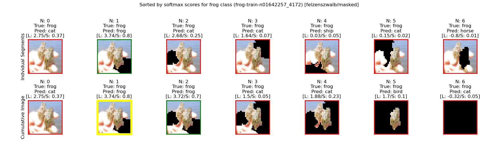
ID: frog-train-n01650901_376/felzenszwalb_gaussian_softmax
Accuracy: 0.687 -> 0.683
Mean Recall: 0.687 -> 0.683
Mean Precision: 0.692 -> 0.69
Mean F1: 0.684 -> 0.679
Target Recall: 0.808 -> 0.852
Target Precision: 0.744 -> 0.66
Target F1: 0.775 -> 0.744
Orig Pred Recall: 0.743 -> 0.735
Orig Pred Precision: 0.594 -> 0.593
Orig Pred F1: 0.66 -> 0.657
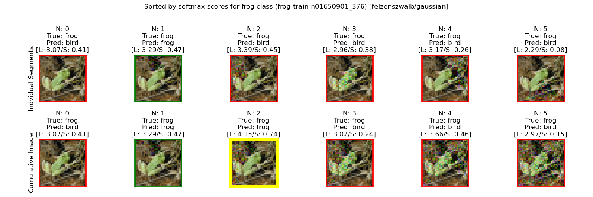ID: frog-train-n01641577_3260/felzenszwalb_masked_softmax
Accuracy: 0.687 -> 0.683
Mean Recall: 0.687 -> 0.683
Mean Precision: 0.692 -> 0.691
Mean F1: 0.684 -> 0.679
Target Recall: 0.808 -> 0.881
Target Precision: 0.744 -> 0.617
Target F1: 0.775 -> 0.725
Orig Pred Recall: 0.743 -> 0.622
Orig Pred Precision: 0.594 -> 0.729
Orig Pred F1: 0.66 -> 0.671
ID: frog-train-n01647640_3012/felzenszwalb_masked_softmax
Accuracy: 0.687 -> 0.682
Mean Recall: 0.687 -> 0.682
Mean Precision: 0.692 -> 0.692
Mean F1: 0.684 -> 0.678
Target Recall: 0.808 -> 0.856
Target Precision: 0.744 -> 0.66
Target F1: 0.775 -> 0.746
Orig Pred Recall: 0.743 -> 0.69
Orig Pred Precision: 0.594 -> 0.646
Orig Pred F1: 0.66 -> 0.667
ID: frog-train-n01647303_616/felzenszwalb_masked_softmax
Accuracy: 0.687 -> 0.682
Mean Recall: 0.687 -> 0.682
Mean Precision: 0.692 -> 0.691
Mean F1: 0.684 -> 0.678
Target Recall: 0.808 -> 0.89
Target Precision: 0.744 -> 0.597
Target F1: 0.775 -> 0.715
Orig Pred Recall: 0.743 -> 0.608
Orig Pred Precision: 0.594 -> 0.745
Orig Pred F1: 0.66 -> 0.669
ID: frog-train-n01639765_13762/felzenszwalb_masked_softmax
Accuracy: 0.687 -> 0.682
Mean Recall: 0.687 -> 0.682
Mean Precision: 0.692 -> 0.69
Mean F1: 0.684 -> 0.678
Target Recall: 0.808 -> 0.852
Target Precision: 0.744 -> 0.645
Target F1: 0.775 -> 0.734
Orig Pred Recall: 0.877 -> 0.849
Orig Pred Precision: 0.68 -> 0.737
Orig Pred F1: 0.766 -> 0.789
ID: frog-train-n01639765_16205/felzenszwalb_masked_softmax
Accuracy: 0.687 -> 0.681
Mean Recall: 0.687 -> 0.681
Mean Precision: 0.692 -> 0.69
Mean F1: 0.684 -> 0.677
Target Recall: 0.808 -> 0.892
Target Precision: 0.744 -> 0.592
Target F1: 0.775 -> 0.712
Orig Pred Recall: 0.743 -> 0.6
Orig Pred Precision: 0.594 -> 0.751
Orig Pred F1: 0.66 -> 0.667
ID: frog-train-n01650167_20208/felzenszwalb_masked_softmax
Accuracy: 0.687 -> 0.68
Mean Recall: 0.687 -> 0.68
Mean Precision: 0.692 -> 0.69
Mean F1: 0.684 -> 0.676
Target Recall: 0.808 -> 0.882
Target Precision: 0.744 -> 0.579
Target F1: 0.775 -> 0.699
Orig Pred Recall: 0.877 -> 0.821
Orig Pred Precision: 0.68 -> 0.787
Orig Pred F1: 0.766 -> 0.804

ID: frog-train-n01646292_3241/felzenszwalb_masked_softmax
Accuracy: 0.687 -> 0.68
Mean Recall: 0.687 -> 0.68
Mean Precision: 0.692 -> 0.692
Mean F1: 0.684 -> 0.676
Target Recall: 0.808 -> 0.885
Target Precision: 0.744 -> 0.606
Target F1: 0.775 -> 0.719
Orig Pred Recall: 0.743 -> 0.545
Orig Pred Precision: 0.594 -> 0.809
Orig Pred F1: 0.66 -> 0.651
ID: frog-train-n01652026_176/felzenszwalb_masked_softmax
Accuracy: 0.687 -> 0.68
Mean Recall: 0.687 -> 0.68
Mean Precision: 0.692 -> 0.689
Mean F1: 0.684 -> 0.673
Target Recall: 0.808 -> 0.864
Target Precision: 0.744 -> 0.629
Target F1: 0.775 -> 0.728
Orig Pred Recall: 0.549 -> 0.425
Orig Pred Precision: 0.553 -> 0.633
Orig Pred F1: 0.551 -> 0.509
ID: frog-train-n01642539_7116/felzenszwalb_gaussian_softmax
Accuracy: 0.687 -> 0.68
Mean Recall: 0.687 -> 0.68
Mean Precision: 0.692 -> 0.688
Mean F1: 0.684 -> 0.675
Target Recall: 0.808 -> 0.893
Target Precision: 0.744 -> 0.579
Target F1: 0.775 -> 0.703
Orig Pred Recall: 0.743 -> 0.671
Orig Pred Precision: 0.594 -> 0.662
Orig Pred F1: 0.66 -> 0.667
ID: frog-train-n01646292_3760/felzenszwalb_masked_softmax
Accuracy: 0.687 -> 0.679
Mean Recall: 0.687 -> 0.679
Mean Precision: 0.692 -> 0.689
Mean F1: 0.684 -> 0.674
Target Recall: 0.808 -> 0.883
Target Precision: 0.744 -> 0.601
Target F1: 0.775 -> 0.715
Orig Pred Recall: 0.743 -> 0.683
Orig Pred Precision: 0.594 -> 0.646
Orig Pred F1: 0.66 -> 0.664
ID: frog-train-n01646292_769/felzenszwalb_masked_softmax
Accuracy: 0.687 -> 0.678
Mean Recall: 0.687 -> 0.678
Mean Precision: 0.692 -> 0.69
Mean F1: 0.684 -> 0.673
Target Recall: 0.808 -> 0.823
Target Precision: 0.744 -> 0.707
Target F1: 0.775 -> 0.761
Orig Pred Recall: 0.549 -> 0.496
Orig Pred Precision: 0.553 -> 0.584
Orig Pred F1: 0.551 -> 0.537
 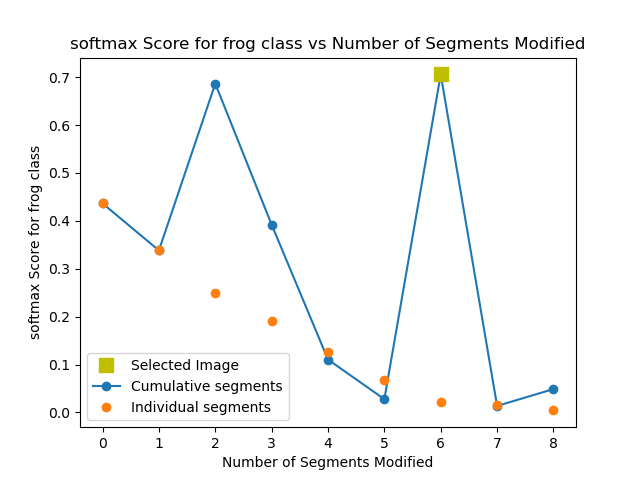
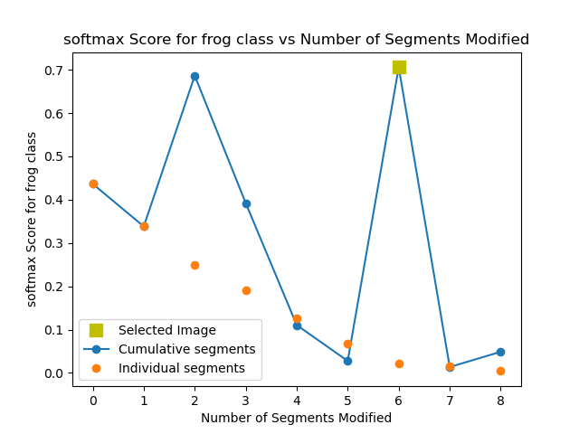
ID: frog-train-n01647180_2213/felzenszwalb_masked_softmax
Accuracy: 0.687 -> 0.678
Mean Recall: 0.687 -> 0.678
Mean Precision: 0.692 -> 0.688
Mean F1: 0.684 -> 0.67
Target Recall: 0.808 -> 0.88
Target Precision: 0.744 -> 0.585
Target F1: 0.775 -> 0.703
Orig Pred Recall: 0.549 -> 0.382
Orig Pred Precision: 0.553 -> 0.672
Orig Pred F1: 0.551 -> 0.487
ID: frog-train-n01641577_12078/felzenszwalb_gaussian_softmax
Accuracy: 0.687 -> 0.676
Mean Recall: 0.687 -> 0.676
Mean Precision: 0.692 -> 0.692
Mean F1: 0.684 -> 0.672
Target Recall: 0.808 -> 0.888
Target Precision: 0.744 -> 0.591
Target F1: 0.775 -> 0.709
Orig Pred Recall: 0.743 -> 0.546
Orig Pred Precision: 0.594 -> 0.799
Orig Pred F1: 0.66 -> 0.649

ID: frog-train-n01650690_3605/felzenszwalb_masked_softmax
Accuracy: 0.687 -> 0.676
Mean Recall: 0.687 -> 0.676
Mean Precision: 0.692 -> 0.695
Mean F1: 0.684 -> 0.673
Target Recall: 0.808 -> 0.885
Target Precision: 0.744 -> 0.592
Target F1: 0.775 -> 0.71
Orig Pred Recall: 0.743 -> 0.545
Orig Pred Precision: 0.594 -> 0.811
Orig Pred F1: 0.66 -> 0.652
ID: frog-train-n01650901_4525/felzenszwalb_gaussian_softmax
Accuracy: 0.687 -> 0.675
Mean Recall: 0.687 -> 0.675
Mean Precision: 0.692 -> 0.694
Mean F1: 0.684 -> 0.671
Target Recall: 0.808 -> 0.907
Target Precision: 0.744 -> 0.534
Target F1: 0.775 -> 0.672
Orig Pred Recall: 0.743 -> 0.546
Orig Pred Precision: 0.594 -> 0.791
Orig Pred F1: 0.66 -> 0.646
ID: frog-train-n01643507_579/felzenszwalb_masked_softmax
Accuracy: 0.687 -> 0.674
Mean Recall: 0.687 -> 0.674
Mean Precision: 0.692 -> 0.692
Mean F1: 0.684 -> 0.67
Target Recall: 0.808 -> 0.914
Target Precision: 0.744 -> 0.522
Target F1: 0.775 -> 0.664
Orig Pred Recall: 0.743 -> 0.577
Orig Pred Precision: 0.594 -> 0.769
Orig Pred F1: 0.66 -> 0.659
ID: frog-train-n01644373_3900/felzenszwalb_gaussian_softmax
Accuracy: 0.687 -> 0.672
Mean Recall: 0.687 -> 0.672
Mean Precision: 0.692 -> 0.693
Mean F1: 0.684 -> 0.669
Target Recall: 0.808 -> 0.918
Target Precision: 0.744 -> 0.503
Target F1: 0.775 -> 0.65
Orig Pred Recall: 0.743 -> 0.547
Orig Pred Precision: 0.594 -> 0.785
Orig Pred F1: 0.66 -> 0.644

ID: frog-train-n01649170_1996/felzenszwalb_gaussian_softmax
Accuracy: 0.687 -> 0.672
Mean Recall: 0.687 -> 0.672
Mean Precision: 0.692 -> 0.69
Mean F1: 0.684 -> 0.664
Target Recall: 0.808 -> 0.907
Target Precision: 0.744 -> 0.508
Target F1: 0.775 -> 0.652
Orig Pred Recall: 0.549 -> 0.348
Orig Pred Precision: 0.553 -> 0.698
Orig Pred F1: 0.551 -> 0.465
ID: frog-train-n01639765_12/felzenszwalb_masked_softmax
Accuracy: 0.687 -> 0.671
Mean Recall: 0.687 -> 0.671
Mean Precision: 0.692 -> 0.689
Mean F1: 0.684 -> 0.664
Target Recall: 0.808 -> 0.887
Target Precision: 0.744 -> 0.535
Target F1: 0.775 -> 0.667
Orig Pred Recall: 0.61 -> 0.547
Orig Pred Precision: 0.6 -> 0.66
Orig Pred F1: 0.605 -> 0.598

ID: frog-train-n01639765_16205/felzenszwalb_gaussian_softmax
Accuracy: 0.687 -> 0.67
Mean Recall: 0.687 -> 0.67
Mean Precision: 0.692 -> 0.692
Mean F1: 0.684 -> 0.666
Target Recall: 0.808 -> 0.911
Target Precision: 0.744 -> 0.513
Target F1: 0.775 -> 0.657
Orig Pred Recall: 0.743 -> 0.489
Orig Pred Precision: 0.594 -> 0.836
Orig Pred F1: 0.66 -> 0.617
ID: frog-train-n01643507_67/felzenszwalb_masked_softmax
Accuracy: 0.687 -> 0.67
Mean Recall: 0.687 -> 0.67
Mean Precision: 0.692 -> 0.69
Mean F1: 0.684 -> 0.664
Target Recall: 0.808 -> 0.901
Target Precision: 0.744 -> 0.569
Target F1: 0.775 -> 0.697
Orig Pred Recall: 0.743 -> 0.538
Orig Pred Precision: 0.594 -> 0.814
Orig Pred F1: 0.66 -> 0.648
ID: frog-train-n01645776_8555/felzenszwalb_gaussian_softmax
Accuracy: 0.687 -> 0.67
Mean Recall: 0.687 -> 0.67
Mean Precision: 0.692 -> 0.695
Mean F1: 0.684 -> 0.666
Target Recall: 0.808 -> 0.903
Target Precision: 0.744 -> 0.512
Target F1: 0.775 -> 0.653
Orig Pred Recall: 0.743 -> 0.48
Orig Pred Precision: 0.594 -> 0.85
Orig Pred F1: 0.66 -> 0.613
ID: frog-train-n01651059_5331/felzenszwalb_gaussian_softmax
Accuracy: 0.687 -> 0.669
Mean Recall: 0.687 -> 0.669
Mean Precision: 0.692 -> 0.694
Mean F1: 0.684 -> 0.665
Target Recall: 0.808 -> 0.908
Target Precision: 0.744 -> 0.514
Target F1: 0.775 -> 0.657
Orig Pred Recall: 0.743 -> 0.483
Orig Pred Precision: 0.594 -> 0.844
Orig Pred F1: 0.66 -> 0.614
ID: frog-train-n01651059_4069/felzenszwalb_masked_softmax
Accuracy: 0.687 -> 0.669
Mean Recall: 0.687 -> 0.669
Mean Precision: 0.692 -> 0.694
Mean F1: 0.684 -> 0.665
Target Recall: 0.808 -> 0.921
Target Precision: 0.744 -> 0.494
Target F1: 0.775 -> 0.643
Orig Pred Recall: 0.743 -> 0.495
Orig Pred Precision: 0.594 -> 0.84
Orig Pred F1: 0.66 -> 0.623
ID: frog-train-n01651285_2453/felzenszwalb_gaussian_softmax
Accuracy: 0.687 -> 0.668
Mean Recall: 0.687 -> 0.668
Mean Precision: 0.692 -> 0.689
Mean F1: 0.684 -> 0.663
Target Recall: 0.808 -> 0.886
Target Precision: 0.744 -> 0.508
Target F1: 0.775 -> 0.645
Orig Pred Recall: 0.549 -> 0.497
Orig Pred Precision: 0.553 -> 0.558
Orig Pred F1: 0.551 -> 0.526
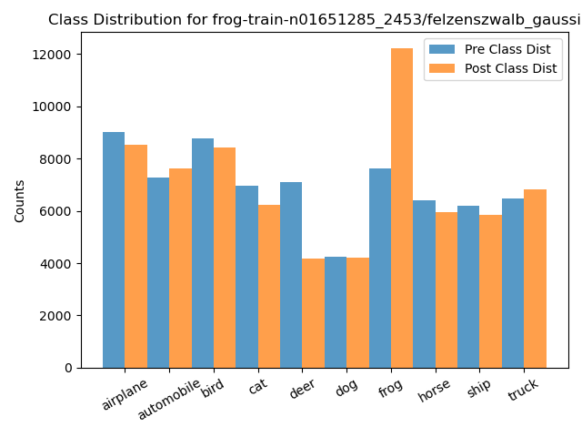ID: frog-train-n01641391_2373/felzenszwalb_gaussian_softmax
Accuracy: 0.687 -> 0.668
Mean Recall: 0.687 -> 0.668
Mean Precision: 0.692 -> 0.689
Mean F1: 0.684 -> 0.66
Target Recall: 0.808 -> 0.886
Target Precision: 0.744 -> 0.54
Target F1: 0.775 -> 0.671
Orig Pred Recall: 0.743 -> 0.768
Orig Pred Precision: 0.594 -> 0.53
Orig Pred F1: 0.66 -> 0.628
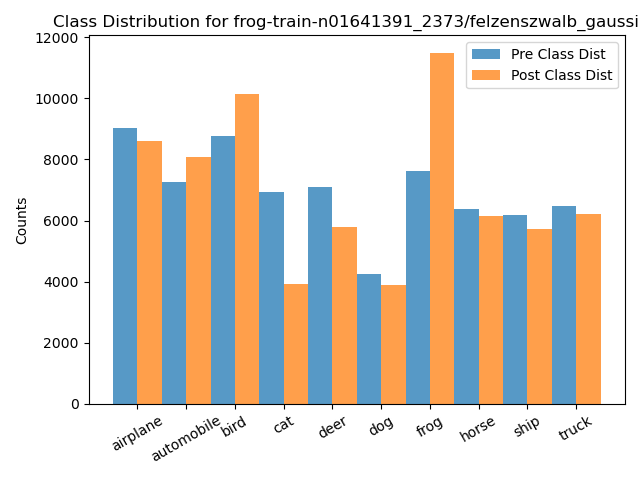ID: frog-train-n01647303_6569/felzenszwalb_gaussian_softmax
Accuracy: 0.687 -> 0.668
Mean Recall: 0.687 -> 0.668
Mean Precision: 0.692 -> 0.696
Mean F1: 0.684 -> 0.664
Target Recall: 0.808 -> 0.927
Target Precision: 0.744 -> 0.474
Target F1: 0.775 -> 0.627
Orig Pred Recall: 0.743 -> 0.54
Orig Pred Precision: 0.594 -> 0.805
Orig Pred F1: 0.66 -> 0.647
ID: frog-train-n01648139_4926/felzenszwalb_gaussian_softmax
Accuracy: 0.687 -> 0.667
Mean Recall: 0.687 -> 0.667
Mean Precision: 0.692 -> 0.689
Mean F1: 0.684 -> 0.658
Target Recall: 0.808 -> 0.889
Target Precision: 0.744 -> 0.524
Target F1: 0.775 -> 0.659
Orig Pred Recall: 0.549 -> 0.332
Orig Pred Precision: 0.553 -> 0.721
Orig Pred F1: 0.551 -> 0.455


ID: frog-train-n01639765_22749/felzenszwalb_gaussian_softmax
Accuracy: 0.687 -> 0.667
Mean Recall: 0.687 -> 0.667
Mean Precision: 0.692 -> 0.692
Mean F1: 0.684 -> 0.663
Target Recall: 0.808 -> 0.918
Target Precision: 0.744 -> 0.495
Target F1: 0.775 -> 0.643
Orig Pred Recall: 0.743 -> 0.519
Orig Pred Precision: 0.594 -> 0.82
Orig Pred F1: 0.66 -> 0.636


ID: frog-train-n01647640_3012/felzenszwalb_gaussian_softmax
Accuracy: 0.687 -> 0.666
Mean Recall: 0.687 -> 0.666
Mean Precision: 0.692 -> 0.692
Mean F1: 0.684 -> 0.664
Target Recall: 0.808 -> 0.921
Target Precision: 0.744 -> 0.477
Target F1: 0.775 -> 0.629
Orig Pred Recall: 0.743 -> 0.588
Orig Pred Precision: 0.594 -> 0.757
Orig Pred F1: 0.66 -> 0.662
ID: frog-train-n01642257_4172/felzenszwalb_gaussian_softmax
Accuracy: 0.687 -> 0.663
Mean Recall: 0.687 -> 0.663
Mean Precision: 0.692 -> 0.696
Mean F1: 0.684 -> 0.656
Target Recall: 0.808 -> 0.925
Target Precision: 0.744 -> 0.454
Target F1: 0.775 -> 0.609
Orig Pred Recall: 0.549 -> 0.303
Orig Pred Precision: 0.553 -> 0.737
Orig Pred F1: 0.551 -> 0.429
ID: frog-train-n01642539_7116/felzenszwalb_masked_softmax
Accuracy: 0.687 -> 0.66
Mean Recall: 0.687 -> 0.66
Mean Precision: 0.692 -> 0.696
Mean F1: 0.684 -> 0.656
Target Recall: 0.808 -> 0.92
Target Precision: 0.744 -> 0.475
Target F1: 0.775 -> 0.626
Orig Pred Recall: 0.743 -> 0.428
Orig Pred Precision: 0.594 -> 0.887
Orig Pred F1: 0.66 -> 0.577
ID: frog-train-n01639765_12/felzenszwalb_gaussian_softmax
Accuracy: 0.687 -> 0.66
Mean Recall: 0.687 -> 0.66
Mean Precision: 0.692 -> 0.693
Mean F1: 0.684 -> 0.654
Target Recall: 0.808 -> 0.86
Target Precision: 0.744 -> 0.558
Target F1: 0.775 -> 0.677
Orig Pred Recall: 0.61 -> 0.474
Orig Pred Precision: 0.6 -> 0.714
Orig Pred F1: 0.605 -> 0.569

ID: frog-train-n01646802_4947/felzenszwalb_masked_softmax
Accuracy: 0.687 -> 0.66
Mean Recall: 0.687 -> 0.66
Mean Precision: 0.692 -> 0.683
Mean F1: 0.684 -> 0.651
Target Recall: 0.808 -> 0.864
Target Precision: 0.744 -> 0.548
Target F1: 0.775 -> 0.671
Orig Pred Recall: 0.61 -> 0.404
Orig Pred Precision: 0.6 -> 0.797
Orig Pred F1: 0.605 -> 0.536
ID: frog-train-n01648139_4926/felzenszwalb_masked_softmax
Accuracy: 0.687 -> 0.659
Mean Recall: 0.687 -> 0.659
Mean Precision: 0.692 -> 0.693
Mean F1: 0.684 -> 0.65
Target Recall: 0.808 -> 0.882
Target Precision: 0.744 -> 0.508
Target F1: 0.775 -> 0.645
Orig Pred Recall: 0.549 -> 0.297
Orig Pred Precision: 0.553 -> 0.744
Orig Pred F1: 0.551 -> 0.424
ID: frog-train-n01641739_5844/felzenszwalb_gaussian_softmax
Accuracy: 0.687 -> 0.656
Mean Recall: 0.687 -> 0.656
Mean Precision: 0.692 -> 0.699
Mean F1: 0.684 -> 0.655
Target Recall: 0.808 -> 0.934
Target Precision: 0.744 -> 0.428
Target F1: 0.775 -> 0.587
Orig Pred Recall: 0.743 -> 0.469
Orig Pred Precision: 0.594 -> 0.86
Orig Pred F1: 0.66 -> 0.607

ID: frog-train-n01653026_1429/felzenszwalb_gaussian_softmax
Accuracy: 0.687 -> 0.654
Mean Recall: 0.687 -> 0.654
Mean Precision: 0.692 -> 0.704
Mean F1: 0.684 -> 0.658
Target Recall: 0.808 -> 0.939
Target Precision: 0.744 -> 0.4
Target F1: 0.775 -> 0.561
Orig Pred Recall: 0.743 -> 0.516
Orig Pred Precision: 0.594 -> 0.815
Orig Pred F1: 0.66 -> 0.632
ID: frog-train-n01654637_2347/felzenszwalb_gaussian_softmax
Accuracy: 0.687 -> 0.654
Mean Recall: 0.687 -> 0.654
Mean Precision: 0.692 -> 0.697
Mean F1: 0.684 -> 0.655
Target Recall: 0.808 -> 0.913
Target Precision: 0.744 -> 0.409
Target F1: 0.775 -> 0.565
Orig Pred Recall: 0.743 -> 0.686
Orig Pred Precision: 0.594 -> 0.634
Orig Pred F1: 0.66 -> 0.659
ID: frog-train-n01650690_9314/felzenszwalb_gaussian_softmax
Accuracy: 0.687 -> 0.65
Mean Recall: 0.687 -> 0.65
Mean Precision: 0.692 -> 0.671
Mean F1: 0.684 -> 0.627
Target Recall: 0.808 -> 0.861
Target Precision: 0.744 -> 0.504
Target F1: 0.775 -> 0.635
Orig Pred Recall: 0.549 -> 0.088
Orig Pred Precision: 0.553 -> 0.637
Orig Pred F1: 0.551 -> 0.154
ID: frog-train-n01639765_53030/felzenszwalb_gaussian_softmax
Accuracy: 0.687 -> 0.649
Mean Recall: 0.687 -> 0.649
Mean Precision: 0.692 -> 0.698
Mean F1: 0.684 -> 0.639
Target Recall: 0.808 -> 0.944
Target Precision: 0.744 -> 0.403
Target F1: 0.775 -> 0.565
Orig Pred Recall: 0.743 -> 0.632
Orig Pred Precision: 0.594 -> 0.705
Orig Pred F1: 0.66 -> 0.667
ID: frog-train-n01650690_12698/felzenszwalb_gaussian_softmax
Accuracy: 0.687 -> 0.644
Mean Recall: 0.687 -> 0.644
Mean Precision: 0.692 -> 0.661
Mean F1: 0.684 -> 0.615
Target Recall: 0.808 -> 0.858
Target Precision: 0.744 -> 0.481
Target F1: 0.775 -> 0.617
Orig Pred Recall: 0.549 -> 0.032
Orig Pred Precision: 0.553 -> 0.554
Orig Pred F1: 0.551 -> 0.061
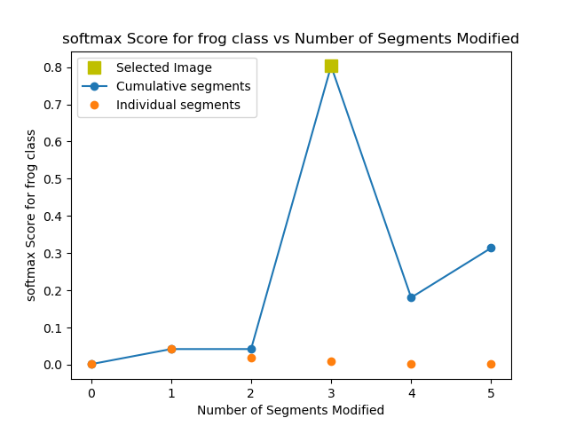ID: frog-train-n01643896_7432/felzenszwalb_gaussian_softmax
Accuracy: 0.687 -> 0.636
Mean Recall: 0.687 -> 0.636
Mean Precision: 0.692 -> 0.609
Mean F1: 0.684 -> 0.604
Target Recall: 0.808 -> 0.88
Target Precision: 0.744 -> 0.438
Target F1: 0.775 -> 0.585
Orig Pred Recall: 0.549 -> 0.0
Orig Pred Precision: 0.553 -> 0.0
Orig Pred F1: 0.551 -> 0.0
ID: frog-train-n01639765_47836/felzenszwalb_gaussian_softmax
Accuracy: 0.687 -> 0.636
Mean Recall: 0.687 -> 0.636
Mean Precision: 0.692 -> 0.607
Mean F1: 0.684 -> 0.603
Target Recall: 0.808 -> 0.854
Target Precision: 0.744 -> 0.471
Target F1: 0.775 -> 0.607
Orig Pred Recall: 0.549 -> 0.0
Orig Pred Precision: 0.553 -> 0.0
Orig Pred F1: 0.551 -> 0.0
ID: frog-train-n01646555_10057/felzenszwalb_gaussian_softmax
Accuracy: 0.687 -> 0.634
Mean Recall: 0.687 -> 0.634
Mean Precision: 0.692 -> 0.611
Mean F1: 0.684 -> 0.604
Target Recall: 0.808 -> 0.898
Target Precision: 0.744 -> 0.405
Target F1: 0.775 -> 0.558
Orig Pred Recall: 0.549 -> 0.0
Orig Pred Precision: 0.553 -> 0.0
Orig Pred F1: 0.551 -> 0.0
ID: frog-train-n01651059_4069/felzenszwalb_gaussian_softmax
Accuracy: 0.687 -> 0.633
Mean Recall: 0.687 -> 0.633
Mean Precision: 0.692 -> 0.673
Mean F1: 0.684 -> 0.608
Target Recall: 0.808 -> 0.929
Target Precision: 0.744 -> 0.386
Target F1: 0.775 -> 0.545
Orig Pred Recall: 0.743 -> 0.703
Orig Pred Precision: 0.594 -> 0.62
Orig Pred F1: 0.66 -> 0.659
ID: frog-train-n01646292_1303/felzenszwalb_gaussian_softmax
Accuracy: 0.687 -> 0.63
Mean Recall: 0.687 -> 0.63
Mean Precision: 0.692 -> 0.599
Mean F1: 0.684 -> 0.599
Target Recall: 0.743 -> 0.789
Target Precision: 0.594 -> 0.489
Target F1: 0.66 -> 0.604
Orig Pred Recall: 0.427 -> 0.0
Orig Pred Precision: 0.706 -> 0.0
Orig Pred F1: 0.532 -> 0.0
ID: frog-train-n01647180_2213/felzenszwalb_gaussian_softmax
Accuracy: 0.687 -> 0.63
Mean Recall: 0.687 -> 0.63
Mean Precision: 0.692 -> 0.614
Mean F1: 0.684 -> 0.601
Target Recall: 0.808 -> 0.917
Target Precision: 0.744 -> 0.382
Target F1: 0.775 -> 0.539
Orig Pred Recall: 0.549 -> 0.0
Orig Pred Precision: 0.553 -> 0.0
Orig Pred F1: 0.551 -> 0.0

ID: frog-train-n01639765_51298/felzenszwalb_masked_softmax
Accuracy: 0.687 -> 0.628
Mean Recall: 0.687 -> 0.628
Mean Precision: 0.692 -> 0.592
Mean F1: 0.684 -> 0.596
Target Recall: 0.808 -> 0.876
Target Precision: 0.744 -> 0.457
Target F1: 0.775 -> 0.6
Orig Pred Recall: 0.743 -> 0.0
Orig Pred Precision: 0.594 -> 0.0
Orig Pred F1: 0.66 -> 0.0
ID: frog-train-n01641577_12998/felzenszwalb_gaussian_softmax
Accuracy: 0.687 -> 0.628
Mean Recall: 0.687 -> 0.628
Mean Precision: 0.692 -> 0.601
Mean F1: 0.684 -> 0.599
Target Recall: 0.808 -> 0.882
Target Precision: 0.744 -> 0.412
Target F1: 0.775 -> 0.562
Orig Pred Recall: 0.427 -> 0.0
Orig Pred Precision: 0.706 -> 0.0
Orig Pred F1: 0.532 -> 0.0
ID: frog-train-n01646292_769/felzenszwalb_gaussian_softmax
Accuracy: 0.687 -> 0.628
Mean Recall: 0.687 -> 0.628
Mean Precision: 0.692 -> 0.616
Mean F1: 0.684 -> 0.6
Target Recall: 0.808 -> 0.927
Target Precision: 0.744 -> 0.372
Target F1: 0.775 -> 0.53
Orig Pred Recall: 0.549 -> 0.0
Orig Pred Precision: 0.553 -> 0.0
Orig Pred F1: 0.551 -> 0.0
ID: frog-train-n01651059_6285/felzenszwalb_gaussian_softmax
Accuracy: 0.687 -> 0.627
Mean Recall: 0.687 -> 0.627
Mean Precision: 0.692 -> 0.612
Mean F1: 0.684 -> 0.598
Target Recall: 0.808 -> 0.898
Target Precision: 0.744 -> 0.398
Target F1: 0.775 -> 0.552
Orig Pred Recall: 0.549 -> 0.0
Orig Pred Precision: 0.553 -> 0.0
Orig Pred F1: 0.551 -> 0.0

ID: frog-train-n01639765_47800/felzenszwalb_gaussian_softmax
Accuracy: 0.687 -> 0.627
Mean Recall: 0.687 -> 0.627
Mean Precision: 0.692 -> 0.617
Mean F1: 0.684 -> 0.601
Target Recall: 0.808 -> 0.838
Target Precision: 0.744 -> 0.633
Target F1: 0.775 -> 0.721
Orig Pred Recall: 0.549 -> 0.0
Orig Pred Precision: 0.553 -> 0.0
Orig Pred F1: 0.551 -> 0.0
ID: frog-train-n01654637_273/felzenszwalb_masked_softmax
Accuracy: 0.687 -> 0.627
Mean Recall: 0.687 -> 0.627
Mean Precision: 0.692 -> 0.596
Mean F1: 0.684 -> 0.595
Target Recall: 0.808 -> 0.843
Target Precision: 0.744 -> 0.45
Target F1: 0.775 -> 0.587
Orig Pred Recall: 0.61 -> 0.0
Orig Pred Precision: 0.6 -> 0.0
Orig Pred F1: 0.605 -> 0.0

ID: frog-train-n01641206_6497/felzenszwalb_gaussian_softmax
Accuracy: 0.687 -> 0.627
Mean Recall: 0.687 -> 0.627
Mean Precision: 0.692 -> 0.642
Mean F1: 0.684 -> 0.597
Target Recall: 0.808 -> 0.851
Target Precision: 0.744 -> 0.424
Target F1: 0.775 -> 0.566
Orig Pred Recall: 0.61 -> 0.005
Orig Pred Precision: 0.6 -> 0.45
Orig Pred F1: 0.605 -> 0.01

ID: frog-train-n01651778_3791/felzenszwalb_gaussian_softmax
Accuracy: 0.687 -> 0.626
Mean Recall: 0.687 -> 0.626
Mean Precision: 0.692 -> 0.683
Mean F1: 0.684 -> 0.602
Target Recall: 0.808 -> 0.913
Target Precision: 0.744 -> 0.401
Target F1: 0.775 -> 0.557
Orig Pred Recall: 0.743 -> 0.042
Orig Pred Precision: 0.594 -> 0.847
Orig Pred F1: 0.66 -> 0.08
ID: frog-train-n01643896_3362/felzenszwalb_gaussian_softmax
Accuracy: 0.687 -> 0.625
Mean Recall: 0.687 -> 0.625
Mean Precision: 0.692 -> 0.598
Mean F1: 0.684 -> 0.596
Target Recall: 0.808 -> 0.866
Target Precision: 0.744 -> 0.404
Target F1: 0.775 -> 0.551
Orig Pred Recall: 0.61 -> 0.0
Orig Pred Precision: 0.6 -> 0.0
Orig Pred F1: 0.605 -> 0.0
ID: frog-train-n01641391_2588/felzenszwalb_gaussian_softmax
Accuracy: 0.687 -> 0.625
Mean Recall: 0.687 -> 0.625
Mean Precision: 0.692 -> 0.599
Mean F1: 0.684 -> 0.595
Target Recall: 0.808 -> 0.857
Target Precision: 0.744 -> 0.4
Target F1: 0.775 -> 0.545
Orig Pred Recall: 0.61 -> 0.0
Orig Pred Precision: 0.6 -> 0.0
Orig Pred F1: 0.605 -> 0.0

ID: frog-train-n01642539_3732/felzenszwalb_masked_softmax
Accuracy: 0.687 -> 0.624
Mean Recall: 0.687 -> 0.624
Mean Precision: 0.692 -> 0.595
Mean F1: 0.684 -> 0.594
Target Recall: 0.808 -> 0.9
Target Precision: 0.744 -> 0.408
Target F1: 0.775 -> 0.561
Orig Pred Recall: 0.743 -> 0.0
Orig Pred Precision: 0.594 -> 0.0
Orig Pred F1: 0.66 -> 0.0

ID: frog-train-n01646292_7305/felzenszwalb_gaussian_softmax
Accuracy: 0.687 -> 0.624
Mean Recall: 0.687 -> 0.624
Mean Precision: 0.692 -> 0.599
Mean F1: 0.684 -> 0.594
Target Recall: 0.808 -> 0.862
Target Precision: 0.744 -> 0.4
Target F1: 0.775 -> 0.546
Orig Pred Recall: 0.61 -> 0.0
Orig Pred Precision: 0.6 -> 0.0
Orig Pred F1: 0.605 -> 0.0
ID: frog-train-n01639765_15809/felzenszwalb_gaussian_softmax
Accuracy: 0.687 -> 0.623
Mean Recall: 0.687 -> 0.623
Mean Precision: 0.692 -> 0.615
Mean F1: 0.684 -> 0.594
Target Recall: 0.808 -> 0.88
Target Precision: 0.744 -> 0.395
Target F1: 0.775 -> 0.545
Orig Pred Recall: 0.549 -> 0.0
Orig Pred Precision: 0.553 -> 0.0
Orig Pred F1: 0.551 -> 0.0
ID: frog-train-n01641206_6497/felzenszwalb_masked_softmax
Accuracy: 0.687 -> 0.623
Mean Recall: 0.687 -> 0.623
Mean Precision: 0.692 -> 0.598
Mean F1: 0.684 -> 0.594
Target Recall: 0.808 -> 0.864
Target Precision: 0.744 -> 0.4
Target F1: 0.775 -> 0.547
Orig Pred Recall: 0.61 -> 0.0
Orig Pred Precision: 0.6 -> 0.0
Orig Pred F1: 0.605 -> 0.0
ID: frog-train-n01641206_8283/felzenszwalb_gaussian_softmax
Accuracy: 0.687 -> 0.623
Mean Recall: 0.687 -> 0.623
Mean Precision: 0.692 -> 0.664
Mean F1: 0.684 -> 0.594
Target Recall: 0.808 -> 0.911
Target Precision: 0.744 -> 0.395
Target F1: 0.775 -> 0.551
Orig Pred Recall: 0.743 -> 0.004
Orig Pred Precision: 0.594 -> 0.659
Orig Pred F1: 0.66 -> 0.008
ID: frog-train-n01640846_10477/felzenszwalb_gaussian_softmax
Accuracy: 0.687 -> 0.623
Mean Recall: 0.687 -> 0.623
Mean Precision: 0.692 -> 0.682
Mean F1: 0.684 -> 0.598
Target Recall: 0.808 -> 0.92
Target Precision: 0.744 -> 0.385
Target F1: 0.775 -> 0.543
Orig Pred Recall: 0.743 -> 0.024
Orig Pred Precision: 0.594 -> 0.824
Orig Pred F1: 0.66 -> 0.047

ID: frog-train-n01642539_3732/felzenszwalb_gaussian_softmax
Accuracy: 0.687 -> 0.622
Mean Recall: 0.687 -> 0.622
Mean Precision: 0.692 -> 0.598
Mean F1: 0.684 -> 0.594
Target Recall: 0.808 -> 0.91
Target Precision: 0.744 -> 0.389
Target F1: 0.775 -> 0.545
Orig Pred Recall: 0.743 -> 0.0
Orig Pred Precision: 0.594 -> 0.0
Orig Pred F1: 0.66 -> 0.0

ID: frog-train-n01644373_6578/felzenszwalb_masked_softmax
Accuracy: 0.687 -> 0.621
Mean Recall: 0.687 -> 0.621
Mean Precision: 0.692 -> 0.6
Mean F1: 0.684 -> 0.593
Target Recall: 0.808 -> 0.873
Target Precision: 0.744 -> 0.385
Target F1: 0.775 -> 0.535
Orig Pred Recall: 0.61 -> 0.0
Orig Pred Precision: 0.6 -> 0.0
Orig Pred F1: 0.605 -> 0.0
ID: frog-train-n01650690_11891/felzenszwalb_gaussian_softmax
Accuracy: 0.687 -> 0.621
Mean Recall: 0.687 -> 0.621
Mean Precision: 0.692 -> 0.601
Mean F1: 0.684 -> 0.593
Target Recall: 0.808 -> 0.867
Target Precision: 0.744 -> 0.384
Target F1: 0.775 -> 0.532
Orig Pred Recall: 0.61 -> 0.0
Orig Pred Precision: 0.6 -> 0.0
Orig Pred F1: 0.605 -> 0.0
ID: frog-train-n01652026_176/felzenszwalb_gaussian_softmax
Accuracy: 0.687 -> 0.62
Mean Recall: 0.687 -> 0.62
Mean Precision: 0.692 -> 0.62
Mean F1: 0.684 -> 0.592
Target Recall: 0.808 -> 0.916
Target Precision: 0.744 -> 0.359
Target F1: 0.775 -> 0.516
Orig Pred Recall: 0.549 -> 0.0
Orig Pred Precision: 0.553 -> 0.0
Orig Pred F1: 0.551 -> 0.0
ID: frog-train-n01646648_8018/felzenszwalb_gaussian_softmax
Accuracy: 0.687 -> 0.62
Mean Recall: 0.687 -> 0.62
Mean Precision: 0.692 -> 0.6
Mean F1: 0.684 -> 0.592
Target Recall: 0.808 -> 0.918
Target Precision: 0.744 -> 0.382
Target F1: 0.775 -> 0.539
Orig Pred Recall: 0.743 -> 0.0
Orig Pred Precision: 0.594 -> 0.0
Orig Pred F1: 0.66 -> 0.0
ID: frog-train-n01650690_3605/felzenszwalb_gaussian_softmax
Accuracy: 0.687 -> 0.62
Mean Recall: 0.687 -> 0.62
Mean Precision: 0.692 -> 0.6
Mean F1: 0.684 -> 0.592
Target Recall: 0.808 -> 0.922
Target Precision: 0.744 -> 0.38
Target F1: 0.775 -> 0.538
Orig Pred Recall: 0.743 -> 0.0
Orig Pred Precision: 0.594 -> 0.0
Orig Pred F1: 0.66 -> 0.0
ID: frog-train-n01654637_8587/felzenszwalb_masked_softmax
Accuracy: 0.687 -> 0.62
Mean Recall: 0.687 -> 0.62
Mean Precision: 0.692 -> 0.6
Mean F1: 0.684 -> 0.592
Target Recall: 0.808 -> 0.922
Target Precision: 0.744 -> 0.379
Target F1: 0.775 -> 0.537
Orig Pred Recall: 0.743 -> 0.0
Orig Pred Precision: 0.594 -> 0.0
Orig Pred F1: 0.66 -> 0.0
ID: frog-train-n01639765_51298/felzenszwalb_gaussian_softmax
Accuracy: 0.687 -> 0.619
Mean Recall: 0.687 -> 0.619
Mean Precision: 0.692 -> 0.601
Mean F1: 0.684 -> 0.592
Target Recall: 0.808 -> 0.917
Target Precision: 0.744 -> 0.374
Target F1: 0.775 -> 0.532
Orig Pred Recall: 0.743 -> 0.0
Orig Pred Precision: 0.594 -> 0.0
Orig Pred F1: 0.66 -> 0.0
ID: frog-train-n01654637_8587/felzenszwalb_gaussian_softmax
Accuracy: 0.687 -> 0.619
Mean Recall: 0.687 -> 0.619
Mean Precision: 0.692 -> 0.6
Mean F1: 0.684 -> 0.592
Target Recall: 0.808 -> 0.925
Target Precision: 0.744 -> 0.376
Target F1: 0.775 -> 0.534
Orig Pred Recall: 0.743 -> 0.0
Orig Pred Precision: 0.594 -> 0.0
Orig Pred F1: 0.66 -> 0.0
ID: frog-train-n01650167_7058/felzenszwalb_gaussian_softmax
Accuracy: 0.687 -> 0.619
Mean Recall: 0.687 -> 0.619
Mean Precision: 0.692 -> 0.599
Mean F1: 0.684 -> 0.592
Target Recall: 0.808 -> 0.926
Target Precision: 0.744 -> 0.376
Target F1: 0.775 -> 0.535
Orig Pred Recall: 0.743 -> 0.0
Orig Pred Precision: 0.594 -> 0.0
Orig Pred F1: 0.66 -> 0.0

ID: frog-train-n01640846_785/felzenszwalb_gaussian_softmax
Accuracy: 0.687 -> 0.619
Mean Recall: 0.687 -> 0.619
Mean Precision: 0.692 -> 0.607
Mean F1: 0.684 -> 0.594
Target Recall: 0.808 -> 0.902
Target Precision: 0.744 -> 0.368
Target F1: 0.775 -> 0.523
Orig Pred Recall: 0.427 -> 0.0
Orig Pred Precision: 0.706 -> 0.0
Orig Pred F1: 0.532 -> 0.0
ID: frog-train-n01654637_8525/felzenszwalb_masked_softmax
Accuracy: 0.687 -> 0.619
Mean Recall: 0.687 -> 0.619
Mean Precision: 0.692 -> 0.69
Mean F1: 0.684 -> 0.593
Target Recall: 0.808 -> 0.931
Target Precision: 0.744 -> 0.372
Target F1: 0.775 -> 0.531
Orig Pred Recall: 0.743 -> 0.008
Orig Pred Precision: 0.594 -> 0.906
Orig Pred F1: 0.66 -> 0.016
ID: frog-train-n01650901_2422/felzenszwalb_gaussian_softmax
Accuracy: 0.687 -> 0.617
Mean Recall: 0.687 -> 0.617
Mean Precision: 0.692 -> 0.602
Mean F1: 0.684 -> 0.591
Target Recall: 0.808 -> 0.926
Target Precision: 0.744 -> 0.368
Target F1: 0.775 -> 0.527
Orig Pred Recall: 0.743 -> 0.0
Orig Pred Precision: 0.594 -> 0.0
Orig Pred F1: 0.66 -> 0.0
ID: frog-train-n01644373_6578/felzenszwalb_gaussian_softmax
Accuracy: 0.687 -> 0.616
Mean Recall: 0.687 -> 0.616
Mean Precision: 0.692 -> 0.602
Mean F1: 0.684 -> 0.59
Target Recall: 0.808 -> 0.884
Target Precision: 0.744 -> 0.368
Target F1: 0.775 -> 0.519
Orig Pred Recall: 0.61 -> 0.0
Orig Pred Precision: 0.6 -> 0.0
Orig Pred F1: 0.605 -> 0.0
ID: frog-train-n01654637_273/felzenszwalb_gaussian_softmax
Accuracy: 0.687 -> 0.616
Mean Recall: 0.687 -> 0.616
Mean Precision: 0.692 -> 0.603
Mean F1: 0.684 -> 0.589
Target Recall: 0.808 -> 0.864
Target Precision: 0.744 -> 0.379
Target F1: 0.775 -> 0.527
Orig Pred Recall: 0.61 -> 0.0
Orig Pred Precision: 0.6 -> 0.0
Orig Pred F1: 0.605 -> 0.0
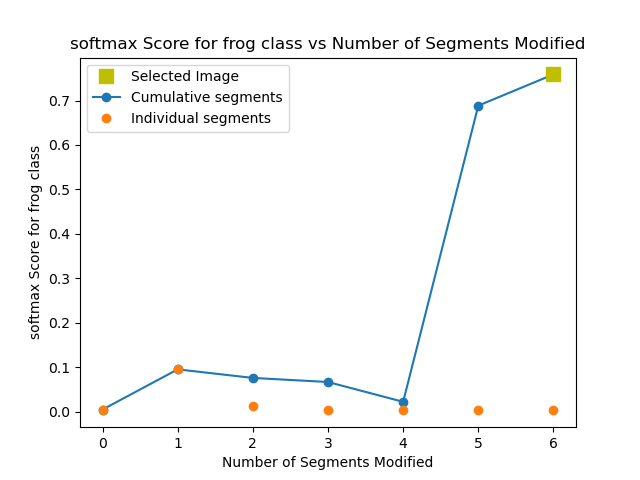ID: frog-train-n01654637_8525/felzenszwalb_gaussian_softmax
Accuracy: 0.687 -> 0.616
Mean Recall: 0.687 -> 0.616
Mean Precision: 0.692 -> 0.601
Mean F1: 0.684 -> 0.59
Target Recall: 0.808 -> 0.935
Target Precision: 0.744 -> 0.363
Target F1: 0.775 -> 0.522
Orig Pred Recall: 0.743 -> 0.0
Orig Pred Precision: 0.594 -> 0.0
Orig Pred F1: 0.66 -> 0.0

ID: frog-train-n01652026_1591/felzenszwalb_gaussian_softmax
Accuracy: 0.687 -> 0.616
Mean Recall: 0.687 -> 0.616
Mean Precision: 0.692 -> 0.603
Mean F1: 0.684 -> 0.59
Target Recall: 0.808 -> 0.935
Target Precision: 0.744 -> 0.36
Target F1: 0.775 -> 0.52
Orig Pred Recall: 0.743 -> 0.0
Orig Pred Precision: 0.594 -> 0.0
Orig Pred F1: 0.66 -> 0.0
ID: frog-train-n01641206_8283/felzenszwalb_masked_softmax
Accuracy: 0.687 -> 0.614
Mean Recall: 0.687 -> 0.614
Mean Precision: 0.692 -> 0.604
Mean F1: 0.684 -> 0.589
Target Recall: 0.808 -> 0.929
Target Precision: 0.744 -> 0.357
Target F1: 0.775 -> 0.516
Orig Pred Recall: 0.743 -> 0.0
Orig Pred Precision: 0.594 -> 0.0
Orig Pred F1: 0.66 -> 0.0

ID: frog-train-n01651487_3546/felzenszwalb_gaussian_softmax
Accuracy: 0.687 -> 0.614
Mean Recall: 0.687 -> 0.614
Mean Precision: 0.692 -> 0.674
Mean F1: 0.684 -> 0.588
Target Recall: 0.808 -> 0.894
Target Precision: 0.744 -> 0.37
Target F1: 0.775 -> 0.523
Orig Pred Recall: 0.549 -> 0.006
Orig Pred Precision: 0.553 -> 0.534
Orig Pred F1: 0.551 -> 0.011
ID: frog-train-n01645776_6647/felzenszwalb_gaussian_softmax
Accuracy: 0.687 -> 0.613
Mean Recall: 0.687 -> 0.613
Mean Precision: 0.692 -> 0.606
Mean F1: 0.684 -> 0.588
Target Recall: 0.808 -> 0.889
Target Precision: 0.744 -> 0.35
Target F1: 0.775 -> 0.502
Orig Pred Recall: 0.61 -> 0.0
Orig Pred Precision: 0.6 -> 0.0
Orig Pred F1: 0.605 -> 0.0

ID: frog-train-n01650901_376/felzenszwalb_masked_softmax
Accuracy: 0.687 -> 0.613
Mean Recall: 0.687 -> 0.613
Mean Precision: 0.692 -> 0.702
Mean F1: 0.684 -> 0.588
Target Recall: 0.808 -> 0.938
Target Precision: 0.744 -> 0.356
Target F1: 0.775 -> 0.516
Orig Pred Recall: 0.743 -> 0.004
Orig Pred Precision: 0.594 -> 1.0
Orig Pred F1: 0.66 -> 0.008

ID: frog-train-n01646292_3760/felzenszwalb_gaussian_softmax
Accuracy: 0.687 -> 0.612
Mean Recall: 0.687 -> 0.612
Mean Precision: 0.692 -> 0.603
Mean F1: 0.684 -> 0.587
Target Recall: 0.808 -> 0.934
Target Precision: 0.744 -> 0.362
Target F1: 0.775 -> 0.521
Orig Pred Recall: 0.743 -> 0.0
Orig Pred Precision: 0.594 -> 0.0
Orig Pred F1: 0.66 -> 0.0

ID: frog-train-n01646802_4121/felzenszwalb_gaussian_softmax
Accuracy: 0.687 -> 0.612
Mean Recall: 0.687 -> 0.612
Mean Precision: 0.692 -> 0.604
Mean F1: 0.684 -> 0.585
Target Recall: 0.808 -> 0.894
Target Precision: 0.744 -> 0.354
Target F1: 0.775 -> 0.508
Orig Pred Recall: 0.61 -> 0.0
Orig Pred Precision: 0.6 -> 0.0
Orig Pred F1: 0.605 -> 0.0
ID: frog-train-n01641206_4622/felzenszwalb_gaussian_softmax
Accuracy: 0.687 -> 0.612
Mean Recall: 0.687 -> 0.612
Mean Precision: 0.692 -> 0.605
Mean F1: 0.684 -> 0.588
Target Recall: 0.808 -> 0.945
Target Precision: 0.744 -> 0.347
Target F1: 0.775 -> 0.507
Orig Pred Recall: 0.743 -> 0.0
Orig Pred Precision: 0.594 -> 0.0
Orig Pred F1: 0.66 -> 0.0
ID: frog-train-n01641577_3260/felzenszwalb_gaussian_softmax
Accuracy: 0.687 -> 0.612
Mean Recall: 0.687 -> 0.612
Mean Precision: 0.692 -> 0.606
Mean F1: 0.684 -> 0.588
Target Recall: 0.808 -> 0.941
Target Precision: 0.744 -> 0.345
Target F1: 0.775 -> 0.505
Orig Pred Recall: 0.743 -> 0.0
Orig Pred Precision: 0.594 -> 0.0
Orig Pred F1: 0.66 -> 0.0
ID: frog-train-n01640846_10591/felzenszwalb_gaussian_softmax
Accuracy: 0.687 -> 0.611
Mean Recall: 0.687 -> 0.611
Mean Precision: 0.692 -> 0.607
Mean F1: 0.684 -> 0.589
Target Recall: 0.808 -> 0.94
Target Precision: 0.744 -> 0.342
Target F1: 0.775 -> 0.502
Orig Pred Recall: 0.743 -> 0.0
Orig Pred Precision: 0.594 -> 0.0
Orig Pred F1: 0.66 -> 0.0
ID: frog-train-n01643507_579/felzenszwalb_gaussian_softmax
Accuracy: 0.687 -> 0.61
Mean Recall: 0.687 -> 0.61
Mean Precision: 0.692 -> 0.607
Mean F1: 0.684 -> 0.586
Target Recall: 0.808 -> 0.941
Target Precision: 0.744 -> 0.347
Target F1: 0.775 -> 0.507
Orig Pred Recall: 0.743 -> 0.0
Orig Pred Precision: 0.594 -> 0.0
Orig Pred F1: 0.66 -> 0.0
ID: frog-train-n01641577_7177/felzenszwalb_gaussian_softmax
Accuracy: 0.687 -> 0.61
Mean Recall: 0.687 -> 0.61
Mean Precision: 0.692 -> 0.575
Mean F1: 0.684 -> 0.577
Target Recall: 0.808 -> 0.872
Target Precision: 0.744 -> 0.53
Target F1: 0.775 -> 0.659
Orig Pred Recall: 0.734 -> 0.0
Orig Pred Precision: 0.804 -> 0.0
Orig Pred F1: 0.767 -> 0.0

ID: frog-train-n01641206_6340/felzenszwalb_gaussian_softmax
Accuracy: 0.687 -> 0.609
Mean Recall: 0.687 -> 0.609
Mean Precision: 0.692 -> 0.61
Mean F1: 0.684 -> 0.587
Target Recall: 0.808 -> 0.907
Target Precision: 0.744 -> 0.335
Target F1: 0.775 -> 0.49
Orig Pred Recall: 0.61 -> 0.0
Orig Pred Precision: 0.6 -> 0.0
Orig Pred F1: 0.605 -> 0.0
ID: frog-train-n01645776_8323/felzenszwalb_gaussian_softmax
Accuracy: 0.687 -> 0.608
Mean Recall: 0.687 -> 0.608
Mean Precision: 0.692 -> 0.605
Mean F1: 0.684 -> 0.583
Target Recall: 0.808 -> 0.888
Target Precision: 0.744 -> 0.349
Target F1: 0.775 -> 0.501
Orig Pred Recall: 0.61 -> 0.0
Orig Pred Precision: 0.6 -> 0.0
Orig Pred F1: 0.605 -> 0.0
ID: frog-train-n01639765_27578/felzenszwalb_gaussian_softmax
Accuracy: 0.687 -> 0.608
Mean Recall: 0.687 -> 0.608
Mean Precision: 0.692 -> 0.607
Mean F1: 0.684 -> 0.585
Target Recall: 0.808 -> 0.944
Target Precision: 0.744 -> 0.338
Target F1: 0.775 -> 0.498
Orig Pred Recall: 0.743 -> 0.0
Orig Pred Precision: 0.594 -> 0.0
Orig Pred F1: 0.66 -> 0.0
ID: frog-train-n01639765_22749/felzenszwalb_masked_softmax
Accuracy: 0.687 -> 0.607
Mean Recall: 0.687 -> 0.607
Mean Precision: 0.692 -> 0.605
Mean F1: 0.684 -> 0.584
Target Recall: 0.808 -> 0.944
Target Precision: 0.744 -> 0.338
Target F1: 0.775 -> 0.498
Orig Pred Recall: 0.743 -> 0.0
Orig Pred Precision: 0.594 -> 0.0
Orig Pred F1: 0.66 -> 0.0
ID: frog-train-n01648620_475/felzenszwalb_gaussian_softmax
Accuracy: 0.687 -> 0.605
Mean Recall: 0.687 -> 0.605
Mean Precision: 0.692 -> 0.597
Mean F1: 0.684 -> 0.579
Target Recall: 0.808 -> 0.896
Target Precision: 0.744 -> 0.342
Target F1: 0.775 -> 0.495
Orig Pred Recall: 0.688 -> 0.0
Orig Pred Precision: 0.78 -> 0.0
Orig Pred F1: 0.731 -> 0.0
ID: frog-train-n01650167_4050/felzenszwalb_gaussian_softmax
Accuracy: 0.687 -> 0.605
Mean Recall: 0.687 -> 0.605
Mean Precision: 0.692 -> 0.611
Mean F1: 0.684 -> 0.582
Target Recall: 0.808 -> 0.955
Target Precision: 0.744 -> 0.326
Target F1: 0.775 -> 0.486
Orig Pred Recall: 0.743 -> 0.0
Orig Pred Precision: 0.594 -> 0.0
Orig Pred F1: 0.66 -> 0.0
ID: frog-train-n01642257_1540/felzenszwalb_gaussian_softmax
Accuracy: 0.687 -> 0.603
Mean Recall: 0.687 -> 0.603
Mean Precision: 0.692 -> 0.593
Mean F1: 0.684 -> 0.583
Target Recall: 0.808 -> 0.838
Target Precision: 0.744 -> 0.653
Target F1: 0.775 -> 0.734
Orig Pred Recall: 0.877 -> 0.0
Orig Pred Precision: 0.68 -> 0.0
Orig Pred F1: 0.766 -> 0.0
ID: frog-train-n01645776_8076/felzenszwalb_gaussian_softmax
Accuracy: 0.687 -> 0.601
Mean Recall: 0.687 -> 0.601
Mean Precision: 0.692 -> 0.618
Mean F1: 0.684 -> 0.584
Target Recall: 0.808 -> 0.93
Target Precision: 0.744 -> 0.307
Target F1: 0.775 -> 0.461
Orig Pred Recall: 0.61 -> 0.0
Orig Pred Precision: 0.6 -> 0.0
Orig Pred F1: 0.605 -> 0.0
ID: frog-train-n01644373_3917/felzenszwalb_gaussian_softmax
Accuracy: 0.687 -> 0.598
Mean Recall: 0.687 -> 0.597
Mean Precision: 0.692 -> 0.698
Mean F1: 0.684 -> 0.59
Target Recall: 0.808 -> 0.966
Target Precision: 0.744 -> 0.283
Target F1: 0.775 -> 0.438
Orig Pred Recall: 0.743 -> 0.576
Orig Pred Precision: 0.594 -> 0.761
Orig Pred F1: 0.66 -> 0.656

ID: frog-train-n01640846_10493/felzenszwalb_gaussian_softmax
Accuracy: 0.687 -> 0.597
Mean Recall: 0.687 -> 0.597
Mean Precision: 0.692 -> 0.617
Mean F1: 0.684 -> 0.58
Target Recall: 0.808 -> 0.956
Target Precision: 0.744 -> 0.304
Target F1: 0.775 -> 0.461
Orig Pred Recall: 0.743 -> 0.0
Orig Pred Precision: 0.594 -> 0.0
Orig Pred F1: 0.66 -> 0.0
ID: frog-train-n01644900_7806/felzenszwalb_gaussian_softmax
Accuracy: 0.687 -> 0.596
Mean Recall: 0.687 -> 0.596
Mean Precision: 0.692 -> 0.643
Mean F1: 0.684 -> 0.584
Target Recall: 0.808 -> 0.962
Target Precision: 0.744 -> 0.283
Target F1: 0.775 -> 0.438
Orig Pred Recall: 0.549 -> 0.0
Orig Pred Precision: 0.553 -> 0.0
Orig Pred F1: 0.551 -> 0.0
ID: frog-train-n01645776_9264/felzenszwalb_masked_softmax
Accuracy: 0.687 -> 0.595
Mean Recall: 0.687 -> 0.595
Mean Precision: 0.692 -> 0.604
Mean F1: 0.684 -> 0.57
Target Recall: 0.808 -> 0.901
Target Precision: 0.744 -> 0.347
Target F1: 0.775 -> 0.501
Orig Pred Recall: 0.549 -> 0.462
Orig Pred Precision: 0.553 -> 0.593
Orig Pred F1: 0.551 -> 0.519
ID: frog-train-n01646802_4947/felzenszwalb_gaussian_softmax
Accuracy: 0.687 -> 0.591
Mean Recall: 0.687 -> 0.591
Mean Precision: 0.692 -> 0.627
Mean F1: 0.684 -> 0.574
Target Recall: 0.808 -> 0.935
Target Precision: 0.744 -> 0.289
Target F1: 0.775 -> 0.441
Orig Pred Recall: 0.61 -> 0.0
Orig Pred Precision: 0.6 -> 0.0
Orig Pred F1: 0.605 -> 0.0
ID: frog-train-n01640846_10010/felzenszwalb_gaussian_softmax
Accuracy: 0.687 -> 0.588
Mean Recall: 0.687 -> 0.588
Mean Precision: 0.692 -> 0.735
Mean F1: 0.684 -> 0.601
Target Recall: 0.808 -> 0.962
Target Precision: 0.744 -> 0.266
Target F1: 0.775 -> 0.417
Orig Pred Recall: 0.743 -> 0.529
Orig Pred Precision: 0.594 -> 0.825
Orig Pred F1: 0.66 -> 0.644
ID: frog-train-n01648620_187/felzenszwalb_gaussian_softmax
Accuracy: 0.687 -> 0.582
Mean Recall: 0.687 -> 0.582
Mean Precision: 0.692 -> 0.629
Mean F1: 0.684 -> 0.572
Target Recall: 0.808 -> 0.967
Target Precision: 0.744 -> 0.276
Target F1: 0.775 -> 0.43
Orig Pred Recall: 0.743 -> 0.0
Orig Pred Precision: 0.594 -> 0.0
Orig Pred F1: 0.66 -> 0.0
ID: frog-train-n01640846_352/felzenszwalb_gaussian_softmax
Accuracy: 0.687 -> 0.577
Mean Recall: 0.687 -> 0.577
Mean Precision: 0.692 -> 0.631
Mean F1: 0.684 -> 0.566
Target Recall: 0.808 -> 0.97
Target Precision: 0.744 -> 0.27
Target F1: 0.775 -> 0.423
Orig Pred Recall: 0.743 -> 0.0
Orig Pred Precision: 0.594 -> 0.0
Orig Pred F1: 0.66 -> 0.0
ID: frog-train-n01648620_3133/felzenszwalb_gaussian_softmax
Accuracy: 0.687 -> 0.567
Mean Recall: 0.687 -> 0.567
Mean Precision: 0.692 -> 0.613
Mean F1: 0.684 -> 0.563
Target Recall: 0.808 -> 0.929
Target Precision: 0.744 -> 0.264
Target F1: 0.775 -> 0.412
Orig Pred Recall: 0.877 -> 0.0
Orig Pred Precision: 0.68 -> 0.0
Orig Pred F1: 0.766 -> 0.0
ID: frog-train-n01643507_67/felzenszwalb_gaussian_softmax
Accuracy: 0.687 -> 0.564
Mean Recall: 0.687 -> 0.564
Mean Precision: 0.692 -> 0.717
Mean F1: 0.684 -> 0.537
Target Recall: 0.808 -> 0.98
Target Precision: 0.744 -> 0.266
Target F1: 0.775 -> 0.418
Orig Pred Recall: 0.743 -> 0.005
Orig Pred Precision: 0.594 -> 1.0
Orig Pred F1: 0.66 -> 0.009
ID: frog-train-n01641577_13963/felzenszwalb_gaussian_softmax
Accuracy: 0.687 -> 0.563
Mean Recall: 0.687 -> 0.563
Mean Precision: 0.692 -> 0.634
Mean F1: 0.684 -> 0.529
Target Recall: 0.808 -> 0.914
Target Precision: 0.744 -> 0.276
Target F1: 0.775 -> 0.424
Orig Pred Recall: 0.549 -> 0.0
Orig Pred Precision: 0.553 -> 0.0
Orig Pred F1: 0.551 -> 0.0
ID: frog-train-n01648620_3133/felzenszwalb_masked_softmax
Accuracy: 0.687 -> 0.562
Mean Recall: 0.687 -> 0.562
Mean Precision: 0.692 -> 0.618
Mean F1: 0.684 -> 0.561
Target Recall: 0.808 -> 0.943
Target Precision: 0.744 -> 0.256
Target F1: 0.775 -> 0.402
Orig Pred Recall: 0.877 -> 0.0
Orig Pred Precision: 0.68 -> 0.0
Orig Pred F1: 0.766 -> 0.0
ID: frog-train-n01650167_20208/felzenszwalb_gaussian_softmax
Accuracy: 0.687 -> 0.562
Mean Recall: 0.687 -> 0.562
Mean Precision: 0.692 -> 0.622
Mean F1: 0.684 -> 0.557
Target Recall: 0.808 -> 0.954
Target Precision: 0.744 -> 0.255
Target F1: 0.775 -> 0.402
Orig Pred Recall: 0.877 -> 0.0
Orig Pred Precision: 0.68 -> 0.0
Orig Pred F1: 0.766 -> 0.0
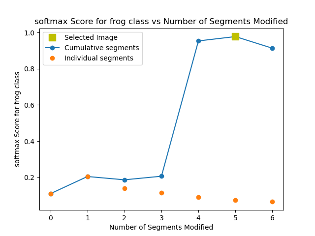ID: frog-train-n01646292_7313/felzenszwalb_masked_softmax
Accuracy: 0.687 -> 0.56
Mean Recall: 0.687 -> 0.56
Mean Precision: 0.692 -> 0.733
Mean F1: 0.684 -> 0.571
Target Recall: 0.808 -> 0.945
Target Precision: 0.744 -> 0.243
Target F1: 0.775 -> 0.386
Orig Pred Recall: 0.769 -> 0.176
Orig Pred Precision: 0.74 -> 0.894
Orig Pred F1: 0.754 -> 0.295
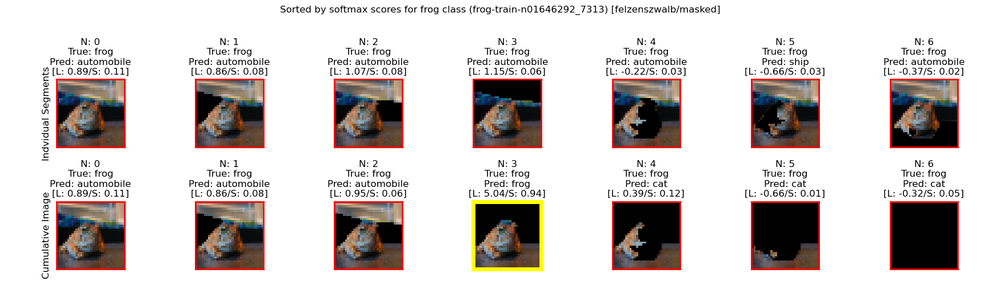

ID: frog-train-n01646802_6441/felzenszwalb_gaussian_softmax
Accuracy: 0.687 -> 0.559
Mean Recall: 0.687 -> 0.559
Mean Precision: 0.692 -> 0.553
Mean F1: 0.684 -> 0.522
Target Recall: 0.808 -> 0.916
Target Precision: 0.744 -> 0.263
Target F1: 0.775 -> 0.409
Orig Pred Recall: 0.427 -> 0.0
Orig Pred Precision: 0.706 -> 0.0
Orig Pred F1: 0.532 -> 0.0
ID: frog-train-n01641577_13963/felzenszwalb_masked_softmax
Accuracy: 0.687 -> 0.547
Mean Recall: 0.687 -> 0.547
Mean Precision: 0.692 -> 0.547
Mean F1: 0.684 -> 0.514
Target Recall: 0.808 -> 0.94
Target Precision: 0.744 -> 0.248
Target F1: 0.775 -> 0.393
Orig Pred Recall: 0.549 -> 0.0
Orig Pred Precision: 0.553 -> 0.0
Orig Pred F1: 0.551 -> 0.0
ID: frog-train-n01641391_2373/felzenszwalb_masked_softmax
Accuracy: 0.687 -> 0.545
Mean Recall: 0.687 -> 0.545
Mean Precision: 0.692 -> 0.625
Mean F1: 0.684 -> 0.519
Target Recall: 0.808 -> 0.987
Target Precision: 0.744 -> 0.244
Target F1: 0.775 -> 0.391
Orig Pred Recall: 0.743 -> 0.0
Orig Pred Precision: 0.594 -> 0.0
Orig Pred F1: 0.66 -> 0.0
ID: frog-train-n01641577_256/felzenszwalb_gaussian_softmax
Accuracy: 0.687 -> 0.528
Mean Recall: 0.687 -> 0.528
Mean Precision: 0.692 -> 0.514
Mean F1: 0.684 -> 0.491
Target Recall: 0.808 -> 0.873
Target Precision: 0.744 -> 0.259
Target F1: 0.775 -> 0.4
Orig Pred Recall: 0.688 -> 0.0
Orig Pred Precision: 0.78 -> 0.0
Orig Pred F1: 0.731 -> 0.0
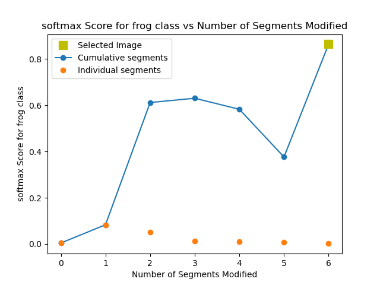ID: frog-train-n01639765_25193/felzenszwalb_gaussian_softmax
Accuracy: 0.687 -> 0.524
Mean Recall: 0.687 -> 0.524
Mean Precision: 0.692 -> 0.521
Mean F1: 0.684 -> 0.482
Target Recall: 0.808 -> 0.863
Target Precision: 0.744 -> 0.349
Target F1: 0.775 -> 0.497
Orig Pred Recall: 0.61 -> 0.0
Orig Pred Precision: 0.6 -> 0.0
Orig Pred F1: 0.605 -> 0.0
ID: frog-train-n01646292_7313/felzenszwalb_gaussian_softmax
Accuracy: 0.687 -> 0.5
Mean Recall: 0.687 -> 0.5
Mean Precision: 0.692 -> 0.633
Mean F1: 0.684 -> 0.476
Target Recall: 0.808 -> 0.916
Target Precision: 0.744 -> 0.221
Target F1: 0.775 -> 0.356
Orig Pred Recall: 0.769 -> 0.0
Orig Pred Precision: 0.74 -> 0.0
Orig Pred F1: 0.754 -> 0.0
ID: frog-train-n01639765_19538/felzenszwalb_gaussian_softmax
Accuracy: 0.687 -> 0.498
Mean Recall: 0.687 -> 0.498
Mean Precision: 0.692 -> 0.531
Mean F1: 0.684 -> 0.464
Target Recall: 0.808 -> 0.931
Target Precision: 0.744 -> 0.22
Target F1: 0.775 -> 0.356
Orig Pred Recall: 0.688 -> 0.0
Orig Pred Precision: 0.78 -> 0.0
Orig Pred F1: 0.731 -> 0.0
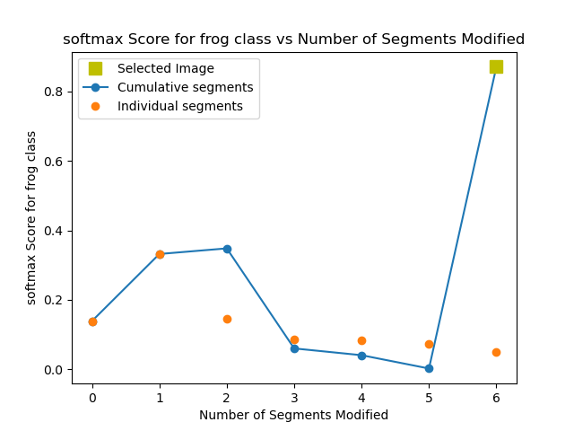ID: frog-train-n01645776_9908/felzenszwalb_gaussian_softmax
Accuracy: 0.687 -> 0.472
Mean Recall: 0.687 -> 0.472
Mean Precision: 0.692 -> 0.716
Mean F1: 0.684 -> 0.505
Target Recall: 0.808 -> 0.986
Target Precision: 0.744 -> 0.175
Target F1: 0.775 -> 0.297
Orig Pred Recall: 0.549 -> 0.0
Orig Pred Precision: 0.553 -> 0.0
Orig Pred F1: 0.551 -> 0.0
ID: frog-train-n01652026_48/felzenszwalb_gaussian_softmax
Accuracy: 0.687 -> 0.34
Mean Recall: 0.687 -> 0.34
Mean Precision: 0.692 -> 0.496
Mean F1: 0.684 -> 0.334
Target Recall: 0.808 -> 0.964
Target Precision: 0.744 -> 0.141
Target F1: 0.775 -> 0.247
Orig Pred Recall: 0.877 -> 0.0
Orig Pred Precision: 0.68 -> 0.0
Orig Pred F1: 0.766 -> 0.0
ID: frog-train-n01645776_9264/felzenszwalb_gaussian_softmax
Accuracy: 0.687 -> 0.31
Mean Recall: 0.687 -> 0.31
Mean Precision: 0.692 -> 0.358
Mean F1: 0.684 -> 0.281
Target Recall: 0.808 -> 0.985
Target Precision: 0.744 -> 0.13
Target F1: 0.775 -> 0.23
Orig Pred Recall: 0.549 -> 0.0
Orig Pred Precision: 0.553 -> 0.0
Orig Pred F1: 0.551 -> 0.0
ID: frog-train-n01641930_2615/felzenszwalb_gaussian_softmax
Accuracy: 0.687 -> 0.129
Mean Recall: 0.687 -> 0.129
Mean Precision: 0.692 -> 0.477
Mean F1: 0.684 -> 0.067
Target Recall: 0.808 -> 0.999
Target Precision: 0.744 -> 0.103
Target F1: 0.775 -> 0.187
Orig Pred Recall: 0.688 -> 0.0
Orig Pred Precision: 0.78 -> 0.0
Orig Pred F1: 0.731 -> 0.0